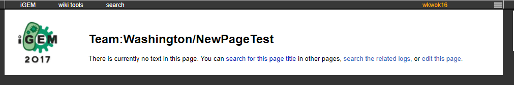

Chapter 2 Creating/editing wiki pages
Before we can make a wiki, we have to know how to do basic edits to a page. You’d be surprised at how many things require special attention to modify on the wiki.
If you’ve ever made your own website before, you may have had to just upload all the relevant files and immediately have a website that you could use. iGEM’s uses MediaWiki, which requires you to type in the HTML for every individual page. Controversially, a lot of web programmers dislike this model, because it increases complexity if they want to do complex stuff. However, note that using MediaWiki is a godsend for some teams that don’t have any knowledge of web programming. That is why there will likely be no change to this structure for years to come.
For any demonstrations, all demonstration pages will use a page from Team:Washington’s iGEM Wiki. We will also be using Google Chrome as a web browser.
2.1 Wiki pages structure
The iGEM wiki is structured in a very straightforward manner.
http://[YEAR].igem.org/Team:[TEAM] will lead you to the main page. Take note that there is no backslash after this. If you have a backslash, then you will go to a blank uncreated page.
There are many special pages that the judges take into consideration for determining what medal you will receive at the Jamboree. These pages can be found here. For example, the Attributions page for your team will follow the structure http://[YEAR].igem.org/Team:[TEAM]/Attributions.
Additionally, the human practices pages are a bit funky, but they follow the same structure, they just have a /HP/ before them. You shouldn’t think about this as if it was a file pathway, but rather a page with the page title /HP/Gold_Integrated or so.
2.2 Judged pages
All the special pages noted in section 2.1 will be an existing page for you to work on. It looks something like the following:
Existing Page
For these pages, you simply have to follow these steps to modify the page:
- Be logged in and make sure you are in your team registry (otherwise you won’t be allowed to edit the pages)
- Go to the top bar and find
wiki tools - Hover over that and go to
edit page - Modify the page as you like (Read below for more tips)
- Click
save, and the page will be updated
Note how there is a blue bordered ALERT box on this page. If you want to be evaluated for this award, you will have to remove (before a certain date) the div that houses this alert message. The code that you have to remove will look something like this:
<div class="column full_size judges-will-not-evaluate">
<h3>★ ALERT! </h3>
<p>This page is used by the judges to evaluate your team for the <a href="http://2017.igem.org/Judging/Medals">medal criterion</a> or <a href="http://2017.igem.org/Judging/Awards"> award listed above</a>. </p>
<p> Delete this box in order to be evaluated for this medal criterion and/or award. See more information at <a href="http://2017.igem.org/Judging/Pages_for_Awards"> Instructions for Pages for awards</a>.</p>
</div>Remove all of the above code if you want to be considered for the award.
2.3 Creating a new blank page
Creating a new page is very simple. First, type this into the navigation bar: http://[YEAR].igem.org/Team:[TEAM]/[PAGE_YOU_WANT_TO_MAKE]. In the next example, We will be creating a new page NewPageTest.
- First, we head to http://2017.igem.org/Team:Washington/NewPageTest
We should see something like this:
 - Go click on
edit this pageor go towiki tools>edit - Edit your heart out. HTML inside the edit box will appear as rendered HTML after saving.